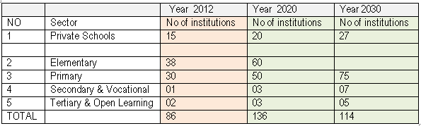
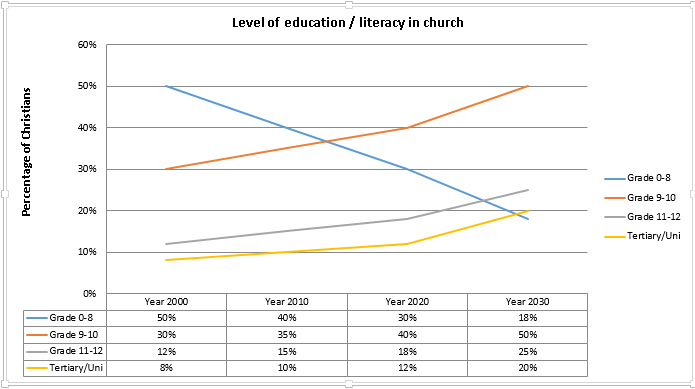
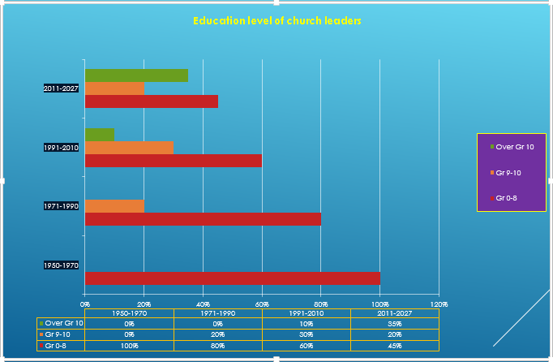

The Holy Spirit is a powerful witness of power encounter and deliverances from the difficulty in communication and understanding because the people were illiterate at that time. Very few men especially those who had involved either in war or engaged with the colonial administration assisted the missionaries in doing translation, preaching and providing simple pastoral leadership for the converted Christians. Through the years of sweat and toil the church has seen changes in literacy level but at a very slow phase still with large population of illiterate people. In 2012 there are 86 schools and institutions that are run by the church with 395 teachers and 6420 students. As of 2030 there will be 114 schools and institutions that will be run by church.Therfore, the teachers will be 500 plus and 12570 students.
The Mission had set up several formal and adult literacy schools that provided accessibility for education and training for the local population throughout their mission establishment areas. The teachers were mainly missionaries and were supported by their home church but teaching the National Curriculum of Papua New Guinea and Australia from preparatory class to grade six.. While only few fortunate students from these mission run schools continued to secondary schools. Not many schools were created due to constrain faced by the Mission or the Government on manpower, funding, infrastructure and inadequate education department policy at that time. Rural areas for the last 35 years still lived a primitive life and education or literacy is still a setback
The Government of Papua New Guinea soon realized that church and state are providing the similar kind of general education except for Religious Instruction which is compulsory in Mission schools. The people of this nation are one and one education system is needed in Papua New Guinea. All Government and church resources are equally and rightfully utilized to educate and train citizens of Papua New Guinea.
The act of Parliament was enacted and amalgamation of state and church schools and institutions now come under the unified teaching service system, Teaching Services Commission.
The transition has enlighten the burdens on the mission and church schools now are receiving Government support by which enrolment and other condition improved and a lot more students were enrolled than before.
The church through the education agency for the last 50 years in partnership with the government has delivered the basic education services and is now striving to implement the Education Reform and Universal basic Education of the Government.
The church however since year 2002 as a result of good government support through the District Services and the current Education Department’s Free and Universal basic Education Policy has enabled the establishment of more new schools and institution that has contributed and made progress towards overcoming the huge illiteracy rate.
Number and sector of schools and institutions in 2012 with projection for 2020 and 2030

The church plan focuses on the limitations of the last 50 years as a result of poor education and illiteracy level seeks to make improvement by strengthening the system of education and built the capacity required for the services offered by the church to the people of Papua New Guinea.
In the next 10 years the church anticipates to reduce the education level for the group of people between grade 0 – 8 by 20% and increase other categories as indicated in the chart below

The formation of the teaching service system was acceptable but the Government had a policy in the ordinance on localization of teachers that place a burden on the mission so their engagement was discontinued. National church teachers weren’t enough to deploy to all the positions in schools. Teachers colleges weren’t providing enough teachers to meet the shortfalls, the education department’s planning and implementation was based on quantity instead of quality and universal education. Poor health, economic and infrastructure conditions has had an adverse effect on the people especially the rural and isolated areas.
The National Church plan under the education sector program has captured up to eight (8) key result areas or objectives addressing these concerns and achieving an expected outcome of improved education and literacy rate. Many more men and women with grade ten qualification being employed or appointed into church leadership, positions and work in the church by 2021. The impact on the church and community will be the reduction in illiteracy and poverty status. The schools should have adequate system of operation and governance; improve education capacity and quality infrastructure for conducive learning.
The work for any organization cannot be done without leaders and elders. These people provided foresight, advice and supervise the people and work for efficiency to accomplish the aims and objectives of the organization. The engagement of indigenous men and women in various positions of leadership at local, district, regional and national level started before and continued after the church was given autonomy for self-determination on 23rd of July 1973. The mission trained and nurtured these men and women with the essential qualities of Christian and pastoral leadership preparing the church to grow and become self-supporting, self-Governing and self-propagating by year 2000.
The strategy of the Mission for the self-Governing church with prudent worship life by year 2000 has proven to be unsuccessful due to changes in mission agency and conflicting missions’ policy and also the National Governments localization policy that has affected especially management and administration aspects of the church. There were short term trainings conducted on leadership but little or none on management and administration. The national men and women endeavoured on their own and with little education and the wisdom of God in the power of his Holy Spirit provided leadership and governance to the church since 1973.
The church is thankful and appreciates the efforts in leadership training offered by the field and volunteer Missionaries from Germany, Australia and New Zealand and elsewhere.
The church also acknowledges the contributions made by the following missions as SSEM, then Pioneers, Liebenzelle Mission International and German Missionary Fellowship Mission.
The statistics below indicates the growth of education and literacy level for Pastors and Leaders

1. The education level for Pastors and church leaders by year 2010 has declined by 40 % for grade 0 – 8 and increase of 10 % for grades 9 – 10. The emergence of grade 11-12 and University graduates between 1991 and 2010 is also at 10 %. With such rate of progress SSEC will see more decreases in grade 0 – 8 and increase in grade 9-10 and Grade 11-12 or higher qualifications respectively by year 2030.
2. Brugam Discipleship and Secondary School has contributed many prominent people serving at all levels of church system since 1973 that made an input to the church level for grade 9 – 10 while others came through other schools and Theological institutions.
3. There is possibility for increase of church leadership capacity in grade 11-12 or higher qualification as a result of the establishment of Brugam Secondary, the University Centre and other new institutions that will be established as well as people taking private studies to upgrade their qualification elsewhere.
4. The church had senior men with integrity ordained to the status of Reverend Hood providing eldership service to the Governance of the church as well.
Provide and develop quality Christian education and human resource.
1 Provide sound biblical training on Christian principles and doctrinal practices.